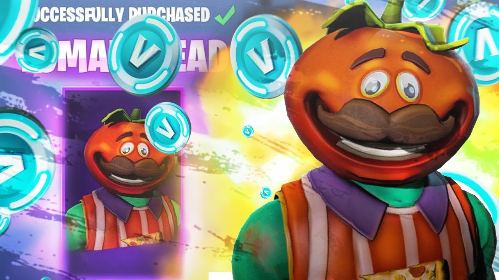

Bienvenidos
Usa el menú superior para navegar por los contenidos del curso e investigación.

Tarea de Investigación
Red Informática
Conjunto de dispositivos conectados para compartir información y recursos (archivos, internet).
LAN vs WAN
LAN: Red local (casa/oficina).
WAN: Red amplia (Internet).
Internet y Web
Internet es la red global; la Web (WWW) es el sistema de páginas que usamos a través de navegadores.
Protocolos
Reglas de comunicación. HTTP/S para webs y DNS para traducir nombres a IP.
Estructura HTML5 (Layout)
El Layout es la distribución visual. Se usan etiquetas como <header>, <nav>, y <div> para organizar.
Mis Proyectos
Desafíos Khan Academy
Aquí aparecerán los enlaces a tus desafíos locales.
Contacto
Formulario de contacto básico para la tarea.